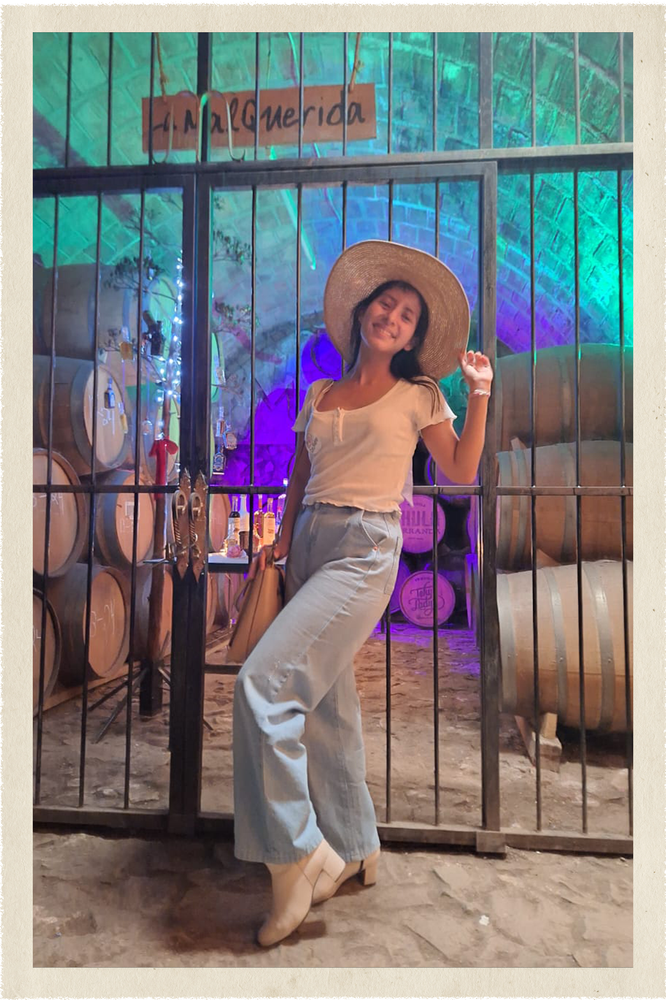
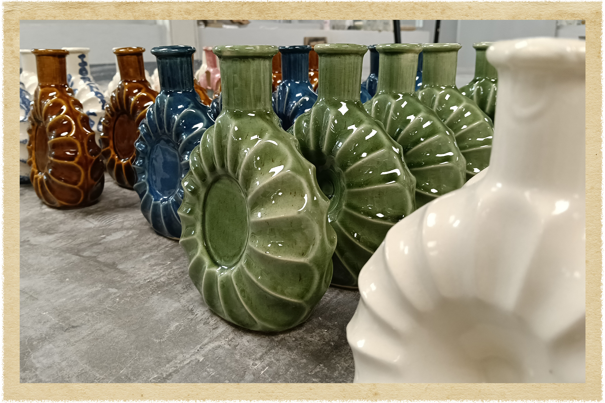
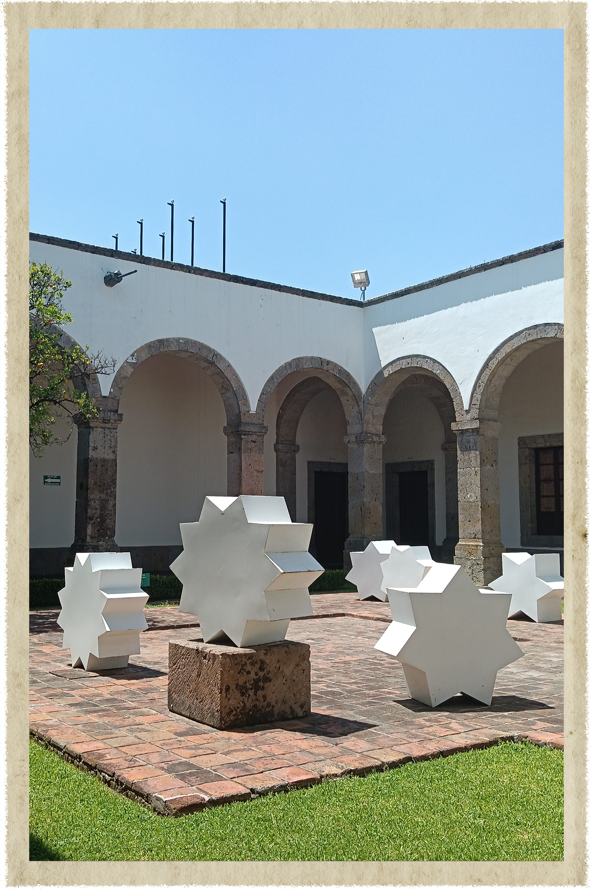
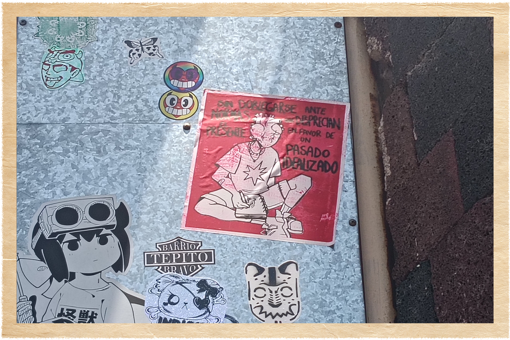

atisbos
no se pretende que de aquí surja ningún tipo de reflexión o pensamiento profundo, este espacio no busca más que ser punto de encuentro entre diferentes recuerdos, penas, dichas y los sentimientos que acompañan a estos, la mayor aspiración de este lugar es poder proteger los momentos más efímeros en forma de pequeñas memorias, de ser una confluencia entre los atisbos del pasado a través de la mirada curiosa del presente, dentro del cuidadoso escrutinio del futuro. sírvase quién lea esto de recorrer entre pequeños fragmentos de mi vida, de mis emociones, de quién fui, de quién soy y de quién me gustaría ser.







